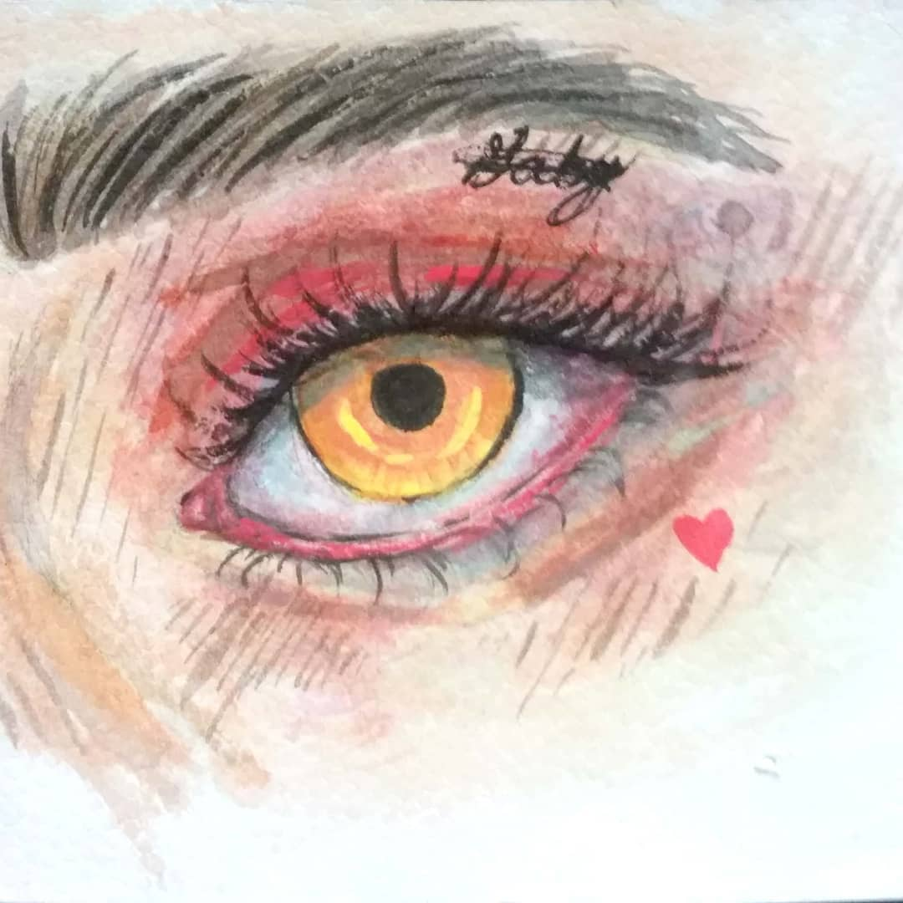
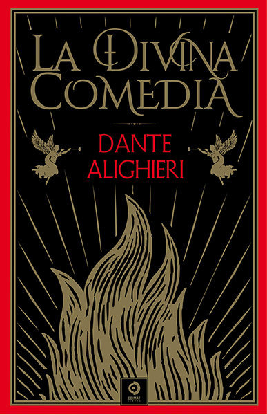
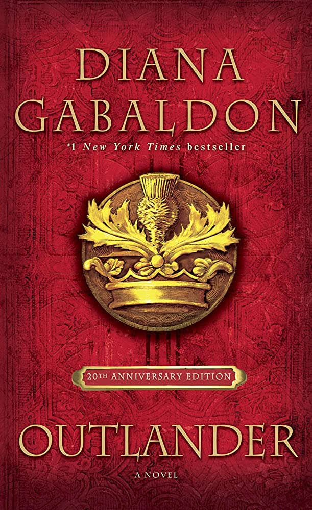

Soy Elda Velásquez, alumna de 12 BTP-INFO "A"
| Galeria | |||||
|  | |||||
| Libros favoritos | |||||
|  |  |
La divina comedia (Da clic en los nombres) La Divina Comedia relata el viaje de Dante por el Infierno, el Purgatorio y el Paraíso, guiado por el poeta romano Virgilio. El poema comienza con el encuentro de Virgilio con Dante, que se ha perdido en una selva y tropieza con bestias salvajes. Virgilio le confiesa al poeta que ha venido en nombre de Beatriz, una dama virtuosa, y lo conduce por un largo camino de redención que comienza en el Averno. |
La llamada de la naturaleza Tiene como protagonista a un perro llamado Buck, que es vendido y enviado a los yacimientos de oro de Alaska. En un país salvaje y hostil, se ve obligado a tirar del trineo del correo del gobierno canadiense, y a luchar por su supervivencia. |
||
|  |
Tratado de la verdadera devoción Es la obra principal del santo Luis María Grignion de Montfort quien fue un teólogo, sacerdote misionero y escritor francés, miembro de la Iglesia católica y canonizado por esta. Donde expresa la práctica de la Consagración a Jesucristo por medio de la Virgen María. |
Forastera Recién acabada la Segunda Guerra Mundial, una joven pareja se reúne por fin para pasar sus vacaciones en Escocia. Una tarde, cuando pasea sola por la pradera, Claire se acerca a un círculo de piedras antiquísimas y cae de pronto en un extraño trance. Al volver en sí se encuentra con un panorama desconcertante: el mundo moderno ha desaparecido, ahora la rodea la Escocia de 1734. |
|||

|
|||||